Experimental. This function merges calculated survey indicators with any provided spatial shapefile to generate a publication-ready thematic map.
Usage
survey_map_indicator(
survey_data,
shapefile,
join_by,
fill_var,
palette = c("magma", "viridis", "plasma", "inferno", "cividis"),
legend_title = NULL,
border_color = "white",
border_width = 0.2
)Arguments
- survey_data
A data frame containing the aggregated survey indicators.
- shapefile
An
sfspatial object containing regional boundaries.- join_by
A character string of the column name present in both datasets to merge on.
- fill_var
A character string of the variable in
survey_datato map (e.g., "Concentration_Index").- palette
A character string specifying the viridis color palette option to use:
"magma"(default),"viridis","plasma","inferno", or"cividis".- legend_title
A character string for the legend title. If
NULL(default), thefill_varname is used.- border_color
A character string for the region border line color. Default is
"white".- border_width
A numeric value for the border line width. Default is
0.2.
Examples
# \donttest{
if (requireNamespace("sf", quietly = TRUE)) {
regional_map <- sf::st_read(
system.file("shape/nc.shp", package = "sf"), quiet = TRUE
)
metrics <- data.frame(
NAME = c("Ashe", "Alleghany", "Surry"),
prevalence = c(0.12, 0.08, 0.15)
)
survey_map_indicator(metrics, regional_map, "NAME", "prevalence")
}

# }